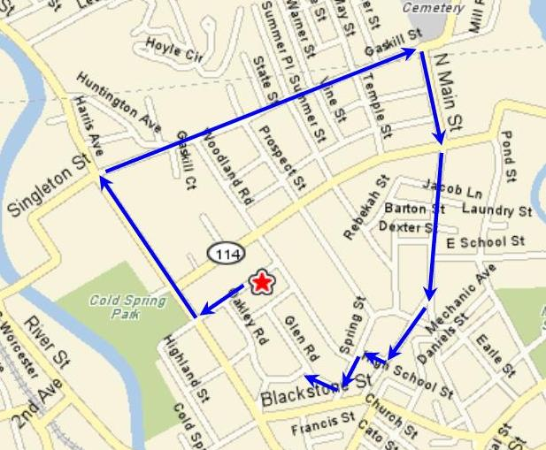

RIH3 AGM Hash
Run #1017, September 26, 2005
Hare: Bondo Jovi
Location: Guess?
Weather: 70ish with light rain.
Present: Basket, Dr. WHO, Trail Hoover, Oozing, Dry Foot Fairy, Great at Giving Head, Async, Tinker, Dick Doc, Fuwangi, Ben, and Seamus. Support: Just Big Shit
The Run:
Scribe’s Note: If you look at the map below and follow the actual trail, you will see brilliance in setting a trail (a) with no false trails, (b) that’s monotonously straight, (c) that terminates two blocks from the hare’s house, (d) that has absolutely no virgin territory, (e) with absolutely no shiggy, (f) with no beer check, and (g) destined to get half the pack lost albeit trail never wanders further than a half mile from the hare’s home.

With the lost of Jake the longstanding RIH3 GM (see Hash #1013), a voting in a new GM was in order. Oozing decided to run again for GM, despite his demoralizing defeat to Jake (see Hash #823). He was voted in by the slimmest of margins. His victory, however, was to be short-lived, as scandals began to surface. Thus, 69 seconds later, he was impeached from his post. Succession of power was still uncertain, but GM would likely fall onto the paws of either Seamus or Ben.
As the misty drizzle turned into a light rain, the pack was off heading back down Meadow street to Cold Spring Park. At the check, Async headed directly into the Park while WHO successfully found trail heading northwest along Harris Ave. Trail then turned northeast along Gaskill St., as G@GH and Dry Foot led the fading pack. There were at least three checks along Gaskill St., but true trail continued straight to North Main St.
About this time, Dick Doc arrived to empty cars of familiar hashers (she will soon learn that RIH3 does not go by HST). She followed the on-out arrow down Meadow St. to Harris Ave. where she lost trail. Little did she know that marks were on the telephone poles, as Bondo continued to be mistaken for a Verizon employee gone mad. Nevertheless, demonstrating the enthusiasm of a true hasher, she decided to turn around and return to the cars, where she ran into another over-achieving hasher Trail Hoover, who on this day walked around a bit. They opted to return to Bondo’s for bondo brew and the company of Bondo. [scratching head in bewilderment, but I digress]
Back on trail, Fuwangi and Basket took turns leading the pack as trail now headed southeast along North Main St. At this time, any sighting of Oozing had long been lost. Wanting to emulate Fuwangi, Oozing too decided to run in his boxers (at least they weren’t skimpies). Naturally, this surely meant that he would get lost somewhere in downtown Woonsocket, to be picked up by the police. Fortunately for Oozing, the Woonsocket cops knew Bondo well.
Nevertheless, somewhere along High School St., Spring St.,.Glen Rd., and Oakley Rd., the hare decided to make a trail something other than miles of straight pavement. This threw everyone, including Async, into a confused mass, which really meant that the wankers were forced to think. Basket, otherwise destined to get lost, knew the area just as well as Bondo, thus he quickly led G@GH back to Bondo’s place. By now, one might think Tinker would find Bondo’s without much effort, but Tinker being Tinker remained confused with the rest. Finally, they slowly trickled into Bondo’s, minus Oozing.
Given that there was NO beer check, no marks to the non-existent beer check, and no on-in, this proved to be one of Bondo’s better efforts. Ratings on the run measured up to be nine impeached GM’s or one collective lost Oozing. Total: +69! Hashit to Tinker who accepted it for Oozing, in absentia. How pathetic and definitely deserving of hashit. Finally, Oozing arrived soaked boxers and all. They all enjoyed hot food and more bondo brew at Bondo’s abode with Just Big Shit supporting this helpless bunch. Not much else to note, except that it must have been the most pathetic AGM in RIH3 history, which really isn’t saying much at all.
On On
Dry Foot Fairy